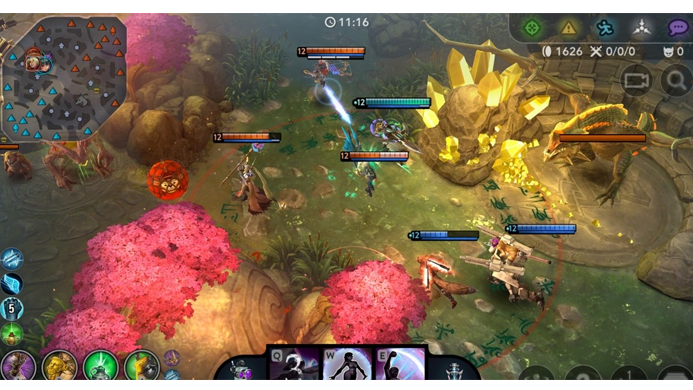
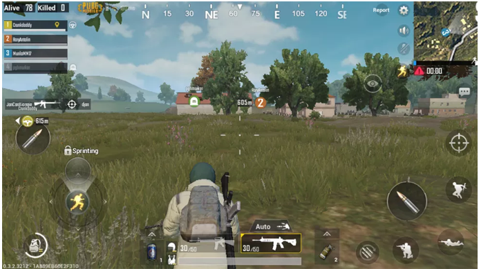
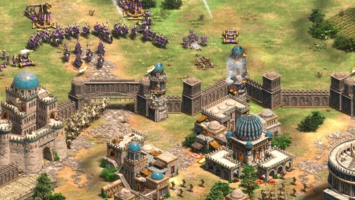
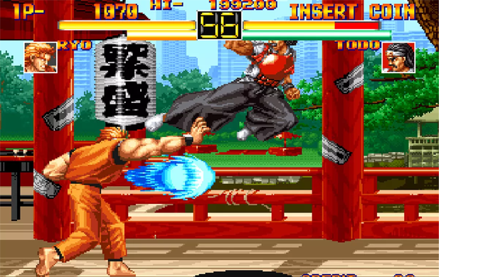
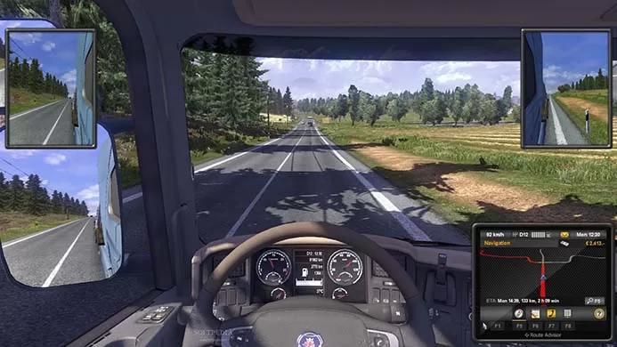

• MOBA: estilo de maior apelo entre os fãs de Esports, o MOBA (Multiplayer Online Battle Arena) é um gênero
de RPG e estratégia em que dois times devem se enfrentar em uma arena com o objetivo de conquistar a base
principal do oponente. Dentre seus principais títulos estão League of Legends e Dota 2;

• BATTLE ROYALE: Fortnite, Free Fire e PUBG são as grandes estrelas deste gênero de sobrevivência em que é declarado
vencedor o jogador ou grupo de jogadores que sobreviverem às investidas dos demais adversários em uma arena;

• FPS: O gênero FPS (First Person Shooter), ou Tiro em Primeira Pessoa, consiste na vitória sobre o oponente
seja pelo cumprimento de uma missão, como destruir sua base, ou pela aniquilação do time. Se você pensou em
Counter Strike e Overwatch, acertou;
• RTS: Sigla para Real-Time Strategy, ou Estratégia em Tempo Real, a modalidade engloba jogos de RPG
consagrados como StarCraft e Warcraft, que exigem a captação de recursos para o enriquecimento de sua base e
fortalecimento de seu exército para o combate aos adversários;

• FIGHTING: Os jogos do gênero Fighting – ou, em bom português, jogos de luta – trazem como objetivo descer a
porrada no seu oponente até que seus pontos de vida cheguem ao zero. Geralmente disputado por apenas dois
jogadores, o gênero apresenta como expoentes as franquias Street Fighter, Smash Bros e Mortal Kombat;

• CARDGAME: Esta modalidade, também conhecida como Cartas, envolve a disputa estratégica entre dois jogadores
em um tabuleiro onde o objetivo é, na maioria dos jogos, zerar os pontos do rival. Hearthstone e GWENT são
os grandes nomes atuais do gênero;
• SIMULADORES: Esta categoria engloba os jogos que, como o próprio nome sugere, reproduzem as características
de esportes do mundo real, como o futebol e o basquete. Disputados entre equipes, os simuladores apresentam
como principais destaques as franquias FIFA, Pro Evolution Soccer e NBA 2K.

Principais competições de esports do Brasil
• CBLOL:
A sigla se refere ao Campeonato Brasileiro de League of Legends, que é considerada a maior competição de
jogos eletrônicos no Brasil. O torneio é disputado desde 2012, quando o jogo League of Legends chegou por
aqui.
Em 2015, o CBLoL adotou o método de disputa em duas fases, chamadas de 1º e 2º Split, sendo realizado até
hoje desta maneira. O campeão da primeira etapa representa o Brasil no Mid Season Invitational (MSI),
torneio internacional realizado no meio do ano, e o campeão da segunda fase do CBLoL compete no Mundial de
CBLoL, o campeonato internacional mais importante da categoria.
Três equipes estão no topo das que mais vezes venceram o torneio, são elas: KaBuM! e INTZ e-Sports, com
quatro conquistas cada uma, e PaiN Gaming, com duas taças.
Além da premiação em dinheiro, desde 2017 os jogadores e técnicos concorrem a troféus individuais nas
categorias: Melhor Suporte, Melhor Topo, Melhor Atirador, Melhor Meio, Melhor Jogador, Caçador, Melhor
Técnico, Jogador Revelação e Craque da Galera.
•CLUTCH CIRCUIT:
O torneio direcionado aos players de Counter Strike GO (CS:GO) é o principal campeonato da categoria e reúne
as equipes mais tradicionais do país, em um sistema de fase de grupos, em que todas as equipes se enfrentam
dentro de seus grupos e cada vitória vale três pontos, cada empate, um ponto e em caso de derrota a equipe
não pontua.
Criado em 2019, o campeonato conta com oito equipes e, no final da temporada, um grande campeão representa o
Brasil no torneio internacional MOCHEL XL ESPORTS, além de ganhar o prêmio de R$ 150 mil.
• LBFF:
A Liga Brasileira de Free Fire reúne, desde 2019, as principais equipes especializadas no game no Brasil. A
competição fez tanto sucesso, que a Garena, produtora que criou o jogo, resolveu estipular novas regras para
a edição de 2020.
As equipes estão distribuídas em três divisões e, ao final da temporada, os melhores da segunda e terceira
divisões sobem de categoria e os piores da primeira e segunda, caem para as categorias inferiores.
Em seu ano de estreia, o Corinthians sagrou-se campeão nacional de Free Fire e representou o Brasil no Free
Fire World Series e também subiu ao lugar mais alto do pódio. Com o sucesso que faz por aqui, a organização
do torneio internacional informou que, em 2020, o Brasil deve ser o país sede da competição.
• LIGA NACIONAL DE FUTEBOL ELETRÔNICO:
Conhecida também pela sigla LNFE, a competição foi organizada para consolidar o futebol eletrônico no
cenário dos grandes torneios nacionais de esports. Os players competem no game FIFA, em partidas
qualificatórias de futebol on-line, quem vencer avança no campeonato e quem perde é desclassificado.
Os competidores são separados pelo tipo de console (Playstation 4 ou Xbox One) que têm e só podem jogar
contra adversários que tenham o mesmo console. Os gamers podem jogar em times individuais ou ter até quatro
jogadores em cada equipe.